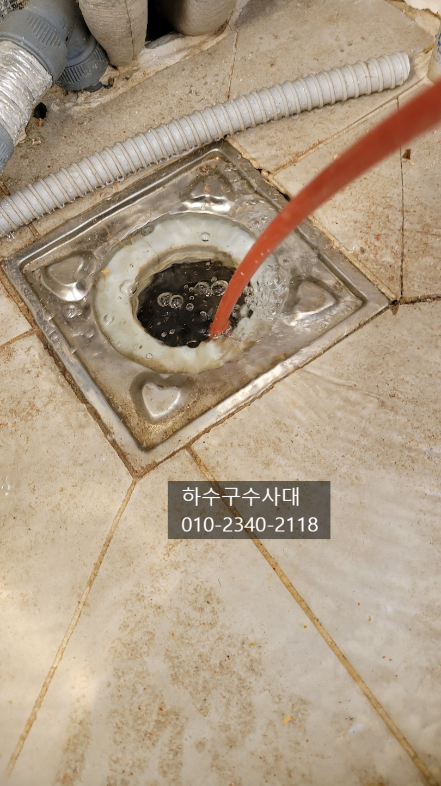
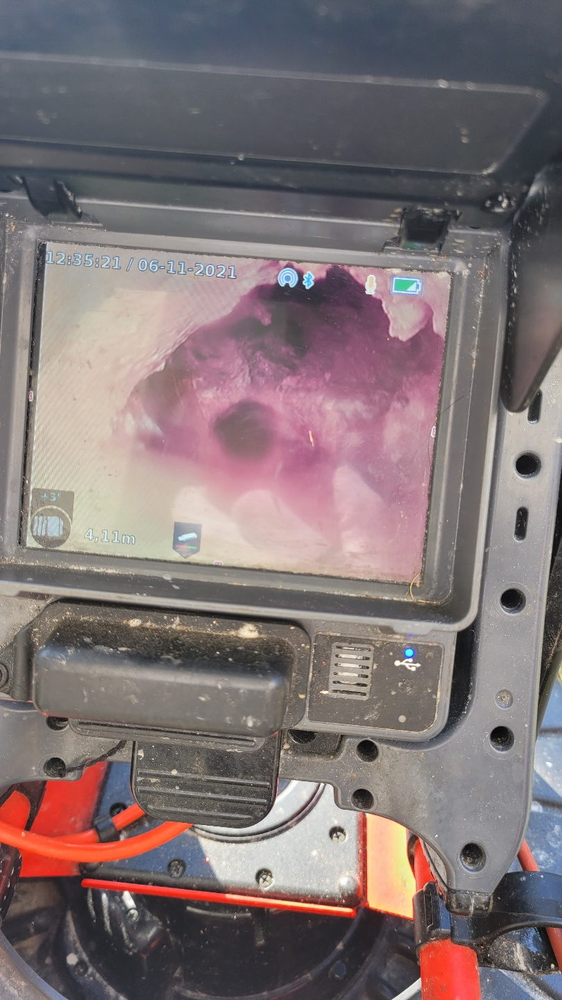
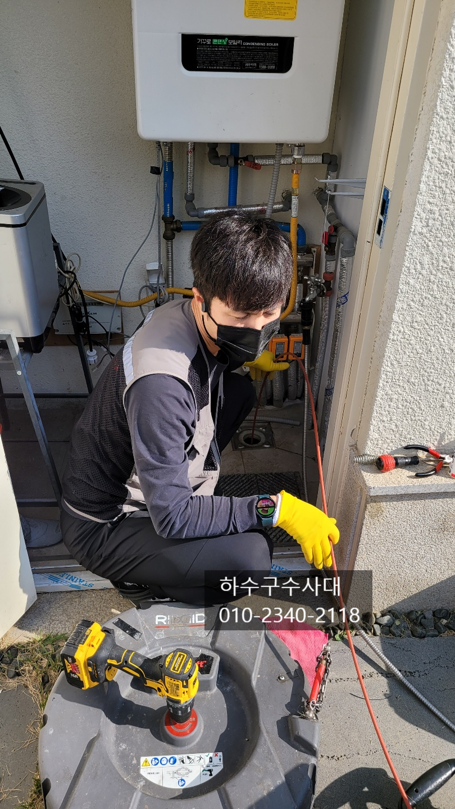
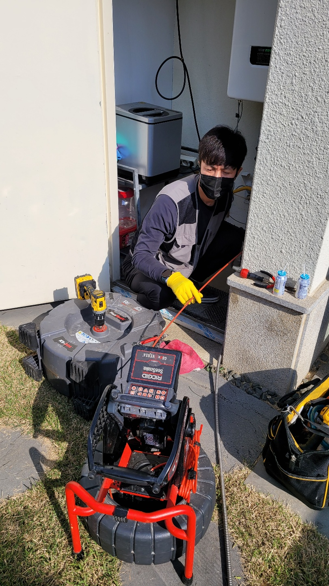
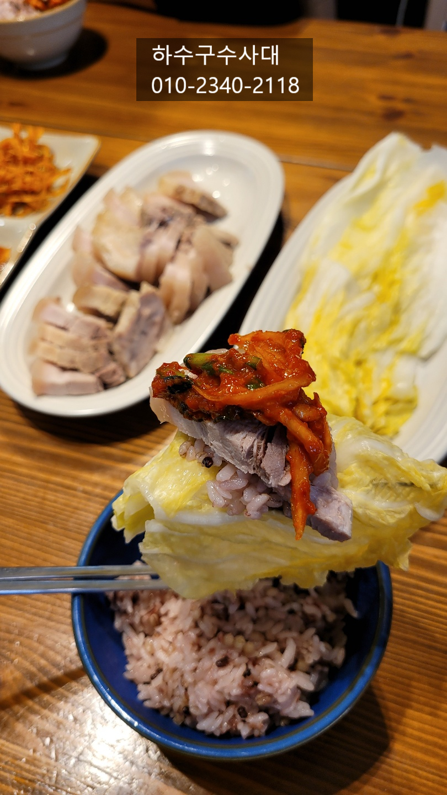
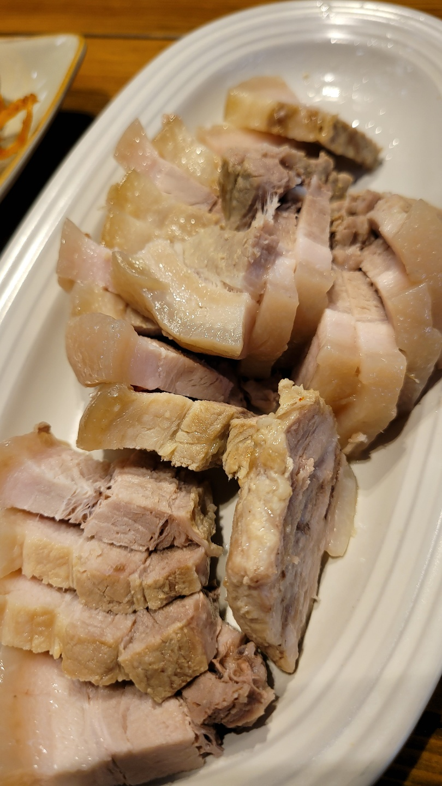
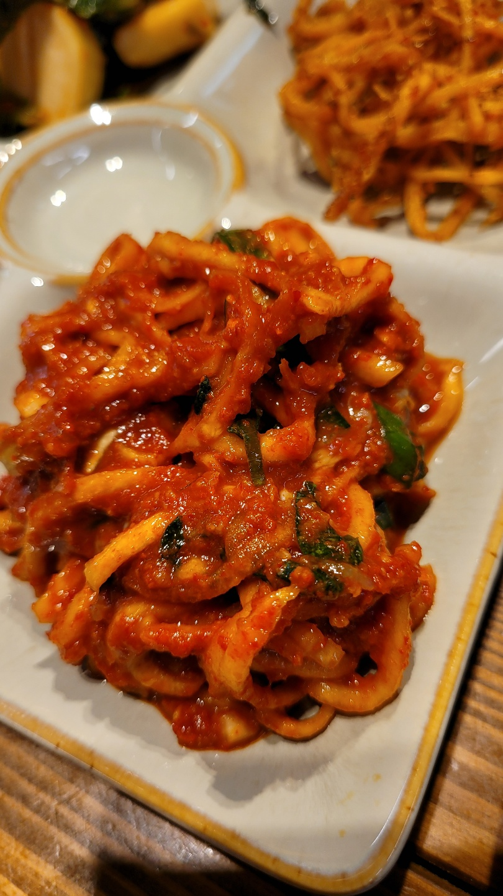

🏠 분당구하수구막힘 수내동 서현동 정자동 하수구막힘
서울 싱크대막힘 전문 시공 후기

📋 작업 개요
- 위치: 서울
- 서비스 유형: 싱크대막힘, 변기막힘, 하수구막힘, 배관막힘, 집수정막힘, 역류해결, 뚫는업체, 배관청소, 고압세척, 설비공사
- 작업 일시: 2021. 11. 7. 0:13
- 업체명: 하수구수사대 (010-5615-2118)
🔍 문제 상황
분당구하수구막힘 수내동 서현동 정자동 하수구막힘
안녕하세요!
오늘은 전원주택에서 #하수구역류 때문에
하수구수사대를 불러주셨습니다.
고객님께서 3개월마다 뚫는 장비를
사서 뚫고 계셨는데요 오늘은
뚫는 도중 뚫는장비 앞에 체결하는
오거라는 부품이 하수구에 빠져
문제가 생겼다고 합니다.
물이 고여있는 보일러실에서 내시경카메라로
배관속을 촬영해 보았는데요 기름슬러지 터널이
생기고 작은 구멍하나가 보입니다.
보통 전원주택의 평수에 따라 배관구조가
다르겠지만 전원주택의 경우 1세대가 쓰는
배관이기 때문에 오수와 하수 배관을 하나씩
쓰는게 대부분입니다.
예를 들면 변기배관 1개, 싱크대,욕실,세탁실 배관1개
이렇게 크게 두개로 나눠집니다.
이렇다 보니 하수 즉 싱크대,욕실,세탁실 배관이 나가는
한곳에서 막히게 되면 싱크대에서 물을 틀면 욕실 또는 세탁실로
역류가 되는 현상이 나타나게 됩니다.
오늘현장은 싱크대에서 물을 사용하면 보일러실에서 물이

🔎 원인 분석
💡 전문가 진단: 하수구수사대010-2340-2118
역류가 되었는데요 보일러실이 싱크대보다 낮기 때문이에요.
내시경카메라를 보면서 작업을 진행하였는데요
고객님께서도 3개월마다 뚫는 작업을 진행하다 보니
근본적으로 원인을 파악하고 해결을 원하셨어요.
"하수구수사대" 이름을 걸고 완벽한 해결과 AS를 약속드리며
작업을 진행하였습니다^^
하수구수사대
010-2340-2118
하필 오늘 공교롭게도 고객님집에서 때이른 김장을 하고
계셨는데 시간도 점심때가 되어 식사를 챙겨주셔서
정말 맛있는 보쌈점심을 먹었는데요
정말 꿀맛이였습니다^^ 뜨끈뜨근한 수육과
배추절임에 김치속까지!! 정말 환상이였어요 ^^
식사를 마치고 작업을 이어서 진행하였는데요
배관에 붙어있던 기름덩어리가 떨어지고 막히고
반복되는 작업을 진행하였습니다.
기름덩어리가 딱딱하다 보니 잘 부서지지 않고
장비가 과부하걸리기도 했는데요 아무래도
오랜기간 쌓여있다보니 단단함 정도가 심해졌던걸로
판단되어 집니다.
오수받이에서도 물이 시원하게 나오지 않고
작은 기름덩어리만 조금씩 나오고 있습니다.
배관에 기름슬러지가 쌓이게되면 악취도 동반되는데요

🔧 작업 과정
고객님께서도 악취가 올라오면 얼마가지 않아
막혔다고 하셨습니다.
고객님께서도 직접 건축하신것이 아니라 분양을
받으신건데요 이처럼 요즘은 전원주택을 분양받아
구매하신 분들이 많은데 정작 배관구조를
모르고 구매하시는 분들이 많다보니
문제가 생기면 구조나 시설물이 어디있는지
관리는 어떻게 하는지 모르는 집주인분들이 종종 계십니다.
단독주택이다 보니 하수배관 등 집전체에 대한 설비구조를
알고 계시면 좋은데요 혹시나 전원주택 구입예정이시거나
신축하시는 분들은 꼭 참고하시길 바래요^^
고객님께서 수고하신다고 커피를 타주셔서 잠시휴식을
하며 가을날씨를 만끽해보았습니다^^
이어서 작업을 시작하였는데요
드디어 배관에 쌓여있던 기름덩어리들이 떠내려오고
물이 시원하게 나오는 것을 확인할수 있습니다.
전원주택의 경우 배관이 길기때문에 구배가 좋지
않은곳이 있기마련인데요 그곳에 기름이 집중적으로
쌓이다 보니 기름이 딱딱하게 굳어 있었습니다.
부서져 나온 기름덩어리를 건져내보니 단단함
정도가 심하여 쉽게 부서지지 않았습니다.
이곳 배관도 마찬가지로 구배가 좋지 않았는데요
배관이 집안쪽을 지나가다 보니 배관공사도
어려운 상황이라 지속적인 관리를 통해
배관을 관리해주시는 걸 추천해드렸습니다.
한달에 한번쯤 주기적으로 펑크린세정제를 부어주시고
물을 충분히 흘려보내면 기름이 쌓이지 않고
깨끗하게 관리가 됩니다.
깨끗하게 세척하고 내시경카메라를 통해
고객님께서 잃어버린 장비앞에 달린오거를
찾을수가 있었는데요 다행히 깊지않은곳에
들어가있어 어렵지 않게 수거를 했답니다^^
내시경카메라를 통해 기름덩어리가 모두 제거되고
깨끗하게 청소가 되었습니다.
이제 관리만 잘하신다면 앞으로는 막힐일이
전혀없겠네요^^


✅ 작업 완료
전원주택이나 단독주택 또는 단독상가에서는
배관관리를 직접하셔야 하는데요
그렇다보니 배관구조를 알고 있어야
문제가 생겼을때 빠른해결을 할수가 있습니다.
간혹 집수정이나 오수받이를 묻어놓아 물이
나오는곳을 못찾는 경우도 있는데요
저희 "하수구수사대"에서는 관로탐지까지
가능하니 언제든지 연락주세요.
서울,경기,인천 전지역 출동가능합니다
오늘도 행복한 하루보내세요^^




⚠️ 주방 싱크대 배관 막힘 예방 수칙
- ✅ 기름기가 묻은 식기나 프라이팬은 설거지 전 키친타올로 반드시 기름때를 닦아내세요.
- ✅ 주기적으로 싱크대 개수대에 뜨거운 물을 가득 받아 한 번에 내려 배관 내부 기름을 씻어내세요.
- ✅ 배수구 거름망을 미세한 필터로 사용하시고 음식물 찌꺼기가 틈으로 새어 들지 않게 관리하세요.
- ✅ 베이킹소다와 식초를 뜨거운 물과 함께 일주일에 한 번씩 부어주면 배관 살균과 막힘 예방에 좋습니다.
💡 핵심 정리
- 확실한 장비 작업(내시경 점검 및 샤프트 스케일링)으로 원인을 뿌리 뽑습니다.
- 작업 후 1년 이내에 동일한 부위 재발 시 100% 무상 A/S 서비스를 보장합니다.
- 서울 · 경기 · 인천 전 지역에 24시간 언제든 긴급 출동할 수 있도록 항시 대기 중입니다.
❓ 자주 묻는 질문 (FAQ)
🚨 서울 싱크대막힘 문제로 고민이신가요?
정확한 원인 진단과 확실한 시공으로 재발 없는 해결을 약속드립니다.
24시간 긴급 출동 | 서울 · 경기 · 인천 전지역 | 1년 내 재발 시 무상 A/S